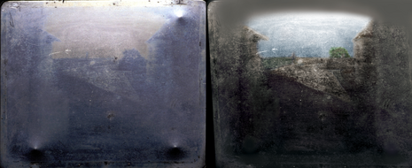
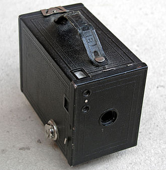
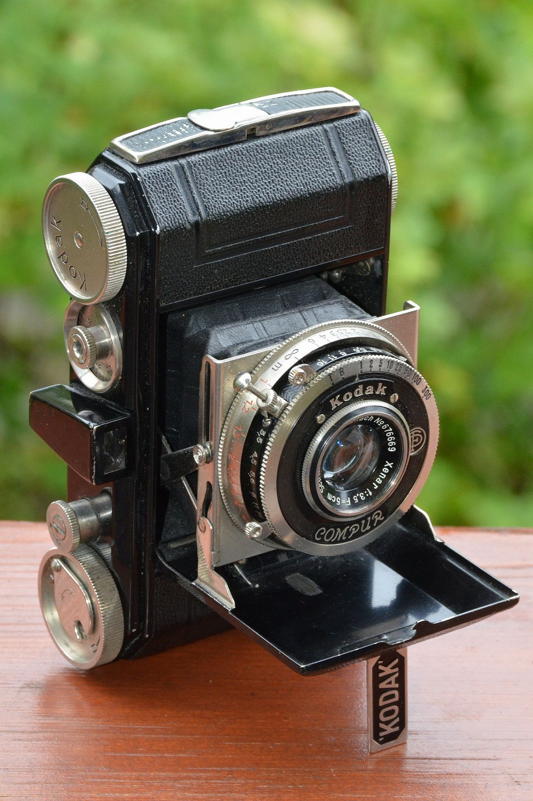

1800s to early 1900s

The original plate of the photo Niépce took on the left, and a colourized enhancement on the right.
Image by Gnrc
Joseph Nicéphore Niépce was the first person to have succeeded at creating small camera images on paper coated with silver chloride, indicated by letters he sent to his sister-in-law around 1816. The photo was of the view from his window at Le Gras. He dissolved bitumen in lavender oil and thinly coated it onto a lithographic stone, or glass or metal. After the coat dried, an engraving printed on paper was laid over the surface in close contact and both of them were put in direct sunlight. After enough sunlight, the solvent could be rinsed away, leaving only the unhardened bitumen that had been shielded from light by the paper.
The parts of surface that was laid bare could be etched with acid or remaining bitumen could serve as the water-repellent material in lithographic printing. Joseph called his process heliography, meaning "sun drawing". He used his technique in 1822 to create what is believed to be the first permanent photographic image, a contact exposed copy of an engraving of Pope Pius VII but was later destroyed when trying to make prints of it.
 A photograph of a Buckler Fern created by william Henry Fox Talbot around 1839 in England.
A photograph of a Buckler Fern created by william Henry Fox Talbot around 1839 in England.
In the 1830s, William Henry Fox Talbot developed a technique called Calotype. This technique would still have a sheet of paper covered with silver chloride, which is then exposed to light to create a negative image. But it differed from the past technique by using a chemical he discovered called gallic acid, it could be used to accelerate the chemical reaction in the silver chloride after it had been exposed to light. This made it possible to shorten the exposure times from the camera down from an hour to one minute. The developed image on the paper was fixed with a chemical called sodium hyposulfite.
 The Giroux daguerreotype camera made by Maison Susse Frères in 1839.
The Giroux daguerreotype camera made by Maison Susse Frères in 1839.
Image from Liudmila and Nelson
Joseph partnered with Louis-Jacques-Mande Daguerre to improve the heliographic process. Joseph experimented with other chemicals to improve the contrast within his heliographs and Daguerre helped improved camera obscura design. The partnership ended when Joseph passed away in 1833. Although, Daguerre succeed in a high-contrast and sharp image by exposing on a plate coated with silver iodide and then exposing the plate to mercury vapor. In 1837, he was able to fix the images using a common salt solution. Daguerre named this process Daguerreotype, he then commercializes it, after a few years, with help from Francois Arago. The French government then acquired his process for a public release.
The Daguerreotype camera was the first ever photographic camera developed for commercial manufacture in 1839. The camera was built by Alphonse Giroux, and they signed a contract with Daguerre and Isidore Niepce to produce cameras in France.
Film and Film Cameras

Kodak No. 2 Brownie box camera circa 1920. Photographed on 13th of July 2005 by Håkan Svensson
The first roll of film was invented by George Eastman and was made out of paper, he started manufacturing the paper film in 1885, before switching to celluloid in 1888 or 1889. George built his first camera called Kodak in 1888, the design was a simple box shape with a fixed lens and a single shutter speed, but it was low priced and came with 100-exposure roll of film. It needed to be taken back to a factory for reloading and processing the roll of film after people ran out. In 1900, George Eastman introduced the Brownie camera which was cheaper than the Kodak and it had a simple box design, with a removable film container, meaning people didn't need to take the whole back to the factory anymore. The Brownie was intended for children to use and was only sold for one dollar.
 First image taken from the Ur-Leica by Oskar Barnack in 1914, Eisenmarkt, Wetzlar, Germany.
First image taken from the Ur-Leica by Oskar Barnack in 1914, Eisenmarkt, Wetzlar, Germany.
Image by Biffcliff
Between 1905 to 1913, manufacturers started using 35mm film for photography. Oskar Barnack who worked at Leitz investigated using 35mm cine film for still cameras, and he built a prototype 35mm film camera named the Ur-Lecia in 1913. Leica commercialized their first 35 mm cameras after World War I and after test marketing the design between 1923 and 1924. They received positive feedback and put the camera in production as the Leica I in 1925. The Leica's popularity spawned lots of competitors and cemented the position of 35 mm as the format for high-end compact cameras.

Image of the Kodak Retina type 117 1934.
Image by Dnalor 01
Kodak put the Retina I on the market in 1934, It introduced the 135 cartridge that is used in all modern 35 mm cameras. Even though the Retina I was comparatively cheaper, most people still couldn't afford 35 mm cameras and roll film remained the format of choice for mass-market cameras until 1936. In 1936 the Japanese camera industry began to take off with the Canon 35 mm rangefinder. Japanese cameras would start to become popular in the west after Korean war soldiers and veterans brought them back to the U.S. after being stationed in Japan.
Colour Photography
In 1840 Edmond Becquerel discovered that silver haildes is normally insensitive to red and yellow light, but it could become sensitive to those colours by being exposed to violet, blue and ultraviolet light. This allowed daguerreotypes and other materials to be developed by bathing in strong red or yellow light rather then doing chemical treatment. He produced colour photographs of the solar spectrum and of camera images in 1848, by a technique later found to be similar to the Lippmann interference method, but camera exposures took too long and could only work in total darkness.
The first ever colour photograph was taken by Thomas Sutton in 1861 and it was a set of three back and white photos taken through a red, green, and blue colour filters and shown overlayed by three projectors with similar filters. It was used in a lecture by James Clerk Maxwell, a Scottish Physicist, who proposed the method in 1855. Although the photographic emulsions at the time had very limited sensitivity and couldn't get the full spectrum of light. So, it was largely forgotten until 1873 when Hermann Wilhelm Vogel discovered a way to emulsions more sensitive to a broader spectrum of light.
In the 1860s, both Louis Ducos du Hauron and Charles Cros unknowingly and independently worked on really similar ideas and presented them both on the same day in 1869. They were methods on viewing a set of three colour-filtered black and white photos in colour without having to project them and to use them to create full colour prints on paper.
The Autochrome plate developed by the Lumière brothers and was the first widely adopted method for colour photography. It was introduced in 1907 and the process was to take one photo through a mosaic of small colour filters, overlaying the emulsion and viewing it through an identical mosaic to capture a full colour image. Autochrome plates had an integral mosaic filter layer of dyed potato grains added to the surface, this would be flattened with a rolling press to enable the grains to absorb colour. The microscopic size of the grain made the illusion that the colours were merging together. The drawback was that exposure took one second in the day, but would take more in poor light, and the image could only be enlarged so much, before you could start to see the grains that made up the image.
In the 1930s, colour photography improved with the introduction of Kodachrome film by Eastman Kodak in 1935. Kodachrome made colour photography become more practical for everyday use and being used for 16 mm home movies in 1935, and 35 mm slides in 1936. It captured red, green, and blue colour components in multiple layers of emulsion and processed it to create complementary cyan, magenta and yellow dye images within the layers, this resulted in a subtractive colour image.
TLRs and SLRs
Thomas Sutton invented the first single-lens reflex camera in 1861, but only a few were made in 1884. The first SLRs were large format cameras, meaning they used an imaging format of 9cm x 12cm or larger.
 Roliflex camera made by Franke and Heidecke in 1928.
Roliflex camera made by Franke and Heidecke in 1928.
Image from Sputniktilt
The first practical TLR camera was the Rolleiflex developed by Franke and Heidecke in 1928. While both SLRs and TLR camera had been available for a few decades before this, they were too bulky. However, the Rolleiflex was more compact, making it a lot more popular than past cameras and the design of it became imitated in future high-end and low-end cameras. The twin-lens reflex camera (TLR) is a camera with two lenses of the same focal length. One lens was to take the picture and the other was used for a viewfinder system. The viewfinder consisted of a 45-degree mirror, a focusing screen at the top of the camera and a pop-up hood surrounding it.
{kind=link}
{kind=link}